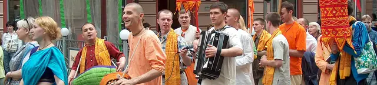
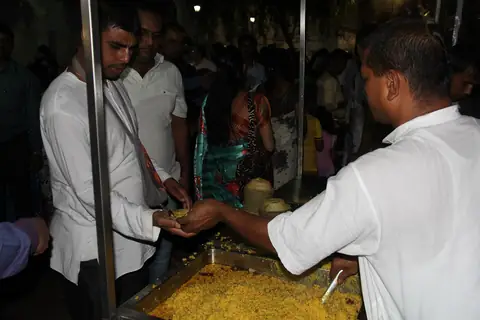

Общество за Кришна съзнание
Вероизповедание от традицията на Гаудия ваишнавизма: пътят на бхакти, любящата преданост към Бога, познат в Бхагавад-гита и Шримад Бхагаватам.
- Кои сме
-
Обществото за Кришна съзнание е българското вероизповедание на Международното общество за Кришна съзнание (ИСКОН), духовно движение, основано през 1966 г. в Ню Йорк от Бхактиведанта Свами Прабхупада.
- Елате
-
Богослуженията, лекциите и неделните програми са открити за гости. Заповядайте, за да се запознаете отблизо с традицията.
- Правен статут
-
Обществото за Кришна съзнание (ОКС) е регистрирано вероизповедание, самостоятелно юридическо лице по Закона за вероизповеданията, с дейност в цялата страна. Присъства в България от 1991 г.

Попитайте
Учение
Ученията на Кришна съзнание отговарят на най-дълбоките въпроси на човека: Кой съм аз? Какъв е смисълът на живота? Какво е Бог?
-
Кришна: Бог като личност
Абсолютната Истина като върховна личност, изпълнена с любов и красота.
-
Душата, кармата и прераждането
Кои сме всъщност и как действат законите, които управляват живота ни.
-
Бхакти йога и маха-мантрата
Пътят на любящата преданост и възпяването на светите имена.
-
Свещените текстове
Бхагавад-гита, Шримад Бхагаватам и ведическата мъдрост.
-
Начин на живот
Вегетарианство, прасадам и четирите принципа на чистия живот.
-
Практика и празници
Богослужение, киртан и празничният календар на общността.
Практика и празници
Богослужението, музиката и празниците са сърцето на живота на общността, открити за всеки гост.
Богослужение и киртан
В центровете на изповеданието ежедневно се провеждат служби, които включват възпяване на светите имена (киртан), молитви, четене и обсъждане на свещените текстове и предлагане на храна на Бога. Киртанът, съвместно пеене с традиционни инструменти, е особено характерен и създава радостна, обединяваща атмосфера. Гостите са добре дошли да наблюдават или да участват.
Неделни програми
Много центрове провеждат седмична открита програма с киртан, лекция върху Бхагавад-гита или Шримад Бхагаватам и споделено вегетарианско угощение (прасадам). Това е най-достъпният начин човек да се запознае отблизо с традицията.
Празничен календар
- ДжанмащамиПразникът на появата на Кришна, един от най-големите в годината.
- Гаура ПурнимаПоявата на Шри Чайтаня Махапрабху.
- Ратха ятраПразникът с колесница: шествие из града, открито за всички.

Благотворителност: „Храна за живота“
Грижата за ближния е неотделима част от практиката. Чрез програмата „Храна за живота“ (Food for Life) общността раздава безплатно осветена вегетарианска храна на нуждаещи се, една от най-широко разпространените благотворителни инициативи от този вид в света, провеждана и в България.
В България
От тихото начало в годините преди демократичните промени до признат и устойчив религиозен живот днес.
| Град | Данни |
|---|---|
| София |
Адрес гр. София, кв. „Малинова долина“, бул. „Климент Охридски“ 119
Телефон 02 961 60 50
Имейл info@krishnabg.com
|
| Пловдив | Местна общност и програми. Данни за контакт: в процес на допълване. |
| Варна | Местна общност и програми. Данни за контакт: в процес на допълване. |
| Бургас | Местна общност и програми. Данни за контакт: в процес на допълване. |
| Стара Загора | Местна общност и програми. Данни за контакт: в процес на допълване. |
| Русе | Местна общност и програми. Данни за контакт: в процес на допълване. |
Обществото за Кришна съзнание развива дейност в цялата страна, чрез храмове, центрове и местни общности (намахатти). Всички те са открити за гости. За връзка с вероизповеданието на национално ниво вижте Контакти.
Често задавани въпроси
Не намерихте отговор? Пишете ни
Кришна съзнание религия ли е, или начин на живот?
И двете. Кришна съзнание е пълноценно монотеистично вероизповедание със свое богословие, богослужение и свещени текстове, което същевременно се изразява в цялостен начин на живот.
Трябва ли да съм индиец или да приема индийската култура?
Не. Изповеданието е открито за всеки човек, независимо от произход. То не изисква приемане на чужда култура, а съживяване на вродената връзка на душата с Бога.
В колко богове вярвате?
В един. Признаваме един-единствен Върховен Бог, който има безброй имена и форми. „Кришна“ е едно от имената Му, означаващо „всепривличащият“.
Мога ли да посетя център, без да съм член?
Разбира се. Богослуженията, лекциите и неделните програми са открити за гости. Заповядайте, за да се запознаете отблизо с традицията.
Какво е прасадам?
Вегетарианска храна, приготвена с грижа и предложена най-напред на Бога. Споделянето ѝ е сред най-обичаните дейности на общността.
Защо разпространявате книги?
Книгите на Шрила Прабхупада предават знанието от първоизточника. Тяхното издаване и споделяне е една от седемте цели на изповеданието.
Контакти и правен статут
| Наименование | „Общество за Кришна съзнание“ (ОКС) |
|---|---|
| Статут | Регистрирано вероизповедание, самостоятелно юридическо лице (чл. 14–15 от Закона за вероизповеданията) |
| Съдебна регистрация | Софийски градски съд, ф.д. № 1663/2003 г. (парт. № 7, том 1, стр. 60) |
| ЕИК / БУЛСТАТ | [да се впише] |
| Управление | Общо събрание · Национален съвет · Председател на Националния съвет |
| Седалище и адрес | гр. София, кв. „Малинова долина“, бул. „Климент Охридски“ 119 |
| Уебсайт | krishnabg.com |
| Имейл | info@krishnabg.com |
| Обхват | цялата територия на Република България |